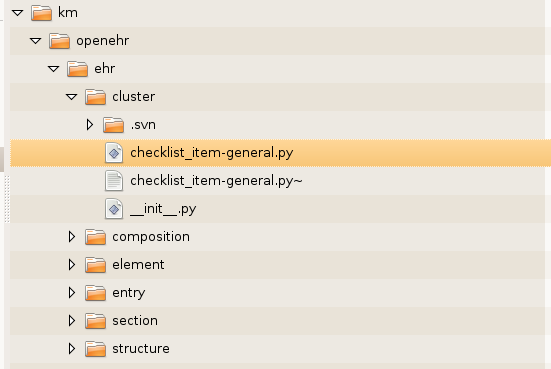
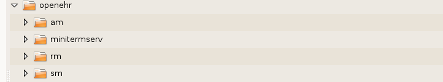

This document is intended to describe the layout and structure of OSHIP. This will inform healthcare application developers regarding the operation of OSHIP as well as how to implement their own applications using OSHIP as a base.
The overall diagram seen in the figure below is at the oship/src/oship level:
The 13606 and hl7 folders are currently place holders for future work to include these models as part of OSHIP. The app_templates folder is where the default OSHIP templates are stored. Notice that there is also an app.py file. These are automatically associated by the Grok machinery. When you create your own application you will create a myapp.py file and a myapp_templates folder. The reasons and processes for this are described in other documents.
The docs folder holds this document and other OSHIP documentation. The km folder is the knowledge module library for OSHIP. It is explained in detail below. The locales folder contains the i18n translations for OSHIP. The openehr folder contains the source code for the openEHR Reference Model. The static folder is where static files such as images, CSS and javascript files are placed for your application. The utils folder is a place for us to put various utilities needed by OSHIP that may not be available as Python eggs through other sources.
The knowledge module library is used for systems such as openEHR and ISO13606 that use the two level modeling approach. It may be possible to also create them for HL7v3. The modules are typically called archetypes since they are an expression an entire (but only one) clinical concept. They are designed by clinical experts and they represent constraints based on a general reference model. Both openEHR and ISO13606 use a domain specific language called the Archetype Definition Language (ADL) to express and transfer these clinical concepts.
In order to improve performance in OSHIP it has been decided that instead of parsing these ADL files on fly and creating in memory objects, it is better to translate the ADL files to Python classes on the file system. There is a project underway as part of the OSHIP project to create an automated translator. That project is “adl2py”. During the interim, everyone can hand write these Python classes by interpreting the ADL and translating it to a Python equivalent using the classes defined in the OSHIP implementation of openEHR. These Python versions of archetypes along with the openEHR reference model can be used by applications outside of OSHIP if desired.
The ADL files have long, unwieldy names like openEHR-EHR-CLUSTER.checklist_item-general.v1 The structure and purpose of these names are described in the ADL references. These names are virtually unusable as a Python file name and classname. In the OSHIP km we break down the components of the ADL file name and create a hierarchy as shown below (ignoring the .svn folders).

Therefore the above named ADL file will be translated to a Python class as:
class ChecklistItemGeneralv1(Archetype,grok.Model):
and it will be located in a file named checklist_item-general.py, in the openehr/ehr/cluster folder.
This allows us to use dot notation (in code) and folder separators (in templates) to specify the archetype details needed.
The openEHR reference model follows the package naming format of the documentation.
